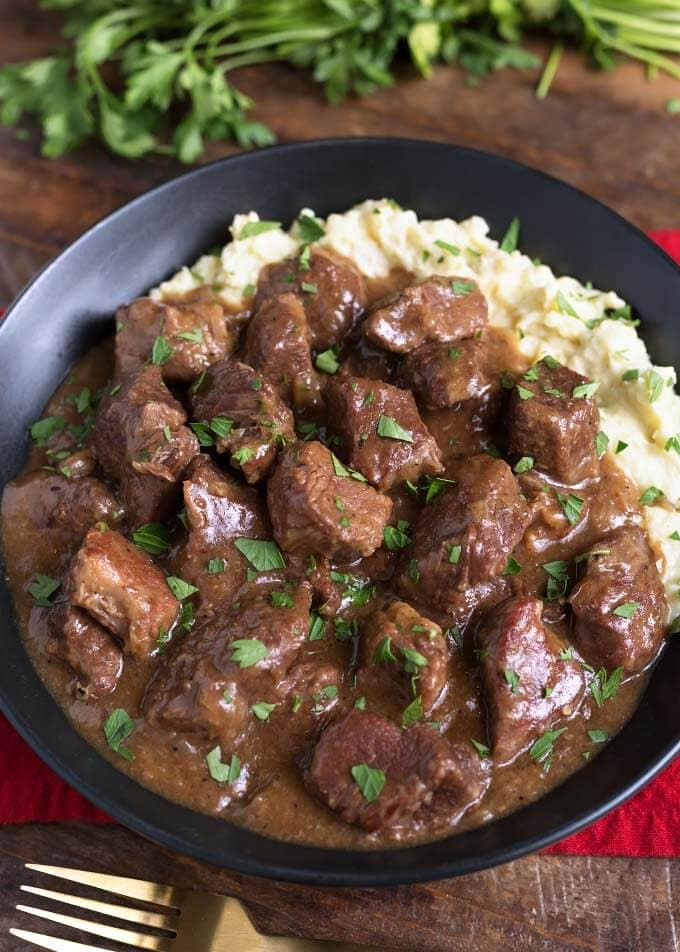

Instant Pot Steak

Description
This Instant Pot steak is incredibly juicy, tender and flavorful! Using a pressure cooker to cook steak is easy, quick and straightforward. This pressure cooker steak
recipe yields the most irresistibly delicious steak!
Any cut of steak will work. Both ribeyes and sirloins are great options since they are tender and flavorful to begin with. I recommend using steak that is about 1 inch thick and boneless. Add more time for bone in.
The homemade steak seasoning adds the perfect amount of flavor. The seasonings are flavorful enough to complement the steaks without being overwhelming. Feel free to add, subtract and adjust seasonings to suit your taste. Or, substitute with 2 tablespoons Montreal steak seasoning if desired.
Olive oil creates a great sear on the steaks. Substitute with butter, avocado oil, or vegetable oil if needed.
Ingredients
- 2 steaks
- ½ tsp ground pepper
- ½ tsp garlic powder
- ½ tsp paprika
- ¼ tsp sea salt
- ¼ tsp onion powder
- 2 tbsp olive oil
- 1 cup water
Directions
- First, combine all seasonings in a small bowl.
- Pat steaks dry with paper towels. Rub seasonings all over both sides of steaks.
- Press sauté on Instant Pot. Add olive oil to pot.
- Once oil is hot, place steaks in pot. Sear for 1 to 2 minutes on each side.
- Press cancel. Use tongs to remove steak from pot onto plate.
- Pour 1 cup water down into pot and scrape bottom of pot with wooden spoon to deglaze it.
- Place trivet inside pot. Place steaks on top of trivet.
- Secure lid and turn vent to sealing. Pressure cook on high for 5 minutes for medium rare, up to 12 minutes for well done.
- When timer goes off, carefully turn valve to venting and manually release pressure.
- Finally, carefully remove steaks from pot. Allow steaks to rest for 5 minutes before slicing into to lock in those juices.